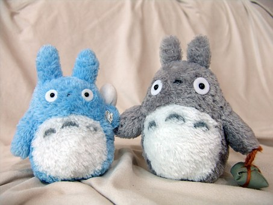
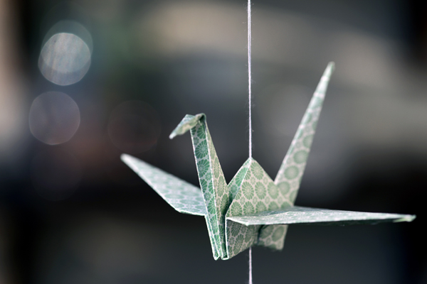

Hallo, mein Name ist Mayu Tanaka, ich komme aus Japan und erzähle euch im heutigen KABU-Beitrag, mit welchen Medien Kinder in meinem Heimatland aufwachsen.
Sicher kennst du Pokémon, Super Mario und Anime. Hier erfährst du etwas über ihre Herkunft.
💭 RoboBoard Sicher kennst du Pokémon, Super Mario und Anime. Hier erfährst du etwas über ihre Herkunft.
Spielekonsolen
Wisst ihr, woher die Firmen Nintendo und Sony kommen? Beide kommen aus Japan. Deswegen sind die Nintendo Wii und die Sony Playstation in Japan mindestens genauso beliebt wie in Deutschland und japanische Kinder spielen von klein auf damit. Gerade die Spiele Pokémon und Mario Kart von Nintento sind in Japan sehr populär. Als ich 1997 in Japan geboren wurde, hatten fast alle Kinder Videospiele von Nintendo. Manchmal kaufen strengere japanische Eltern ihren Kindern diese nicht. Die Spiele von Nintendo sind nämlich so beliebt, dass viele Kinder in Japan nur noch an der Konsole spielen und nichts mehr mit anderen Kindern unternehmen.

Traditionelle japanische Konsolenspiele haben heute wegen der Entwicklung des Smartphones nicht mehr ganz so viel Bedeutung. Denn im Gegensatz zur Wii oder Playstation hat man am Smartphone viele verschiedene Spiele gleichzeitig zur Verfügung.
Anime
Anime ist eine bestimmte Art von japanischem Fernsehprogramm oder Film. Es spielt neben den Spielekonsolen eine große Rolle bei den Kindern. Kennt ihr Studio Ghibli? Das Studio produzierte z.B. Chihiros Reise ins Zauberland oder Mein Nachbar Totoro. Fast alle Japaner haben diese Filme gesehen. Als ich klein war, habe ich an der japanischen Grundschule Die letzten Glühwürmchen gesehen. Das ist ein Film, der Japan zur Zeit des Zweiten Weltkriegs zeigt. Animes sind nicht so grausam wie reale Verfilmungen. Deswegen sind sie besser für Kinder geeignet.

Die Mehrheit des japanischen Anime-Fernsehprogramms besteht aus Comics, z.B. Draemon oder Detektiv Conan. Viele strengen japanischen Eltern lassen ihre Kinder aber keine Fernsehprogramme, außer die Nachrichten, anschauen. Sie finden, dass die Themen vieler Animes nichts für Kinder sind.

Wenn sich japanische Kinder gerade nicht mit Medien beschäftigen, falten sie übrigens gerne Origami, malen Comics oder lesen Manga.